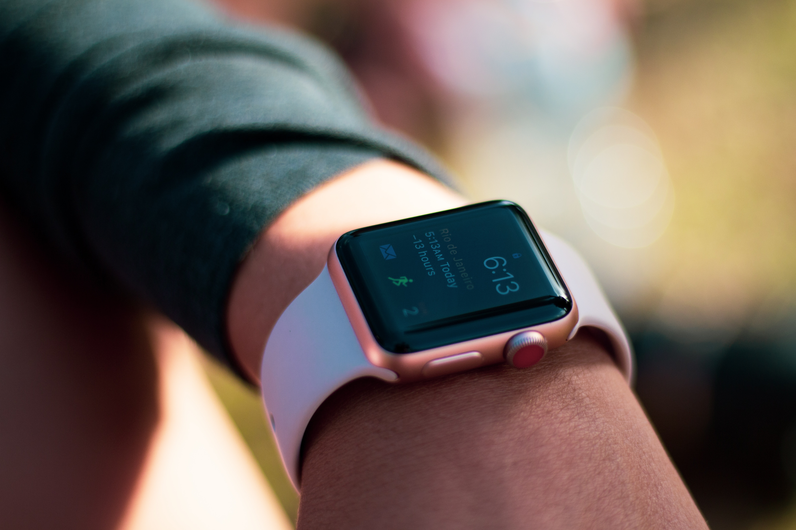

Remote Patient Monitoring
Remote Patient Monitoring is the use of digital technology to monitor and capture medical and other health
data on a patient without the need of going to a medical office. This IoT device is efficient in
time-capturing, reduces emergencies, and is able to provide aid that may have seen as unobtainable for
the patient.
Further information here
Smart Thermometer
During the peril times of COVID-19, people tried their best to remain precautious and safe. One method was to upgrade medical and personal health devices to help track and store data. Smart thermostats was just one example of an IoT device beneficial to the outbreak. Using the product, the user can keep track of their health and recognize any concerning issues.
Further information here
Apple Watch
Created by Apple, the Apple watch is not just a fitness tracker but also a health monitor. With straightforward usage, the Apple watch can keep track of heart rate, blood oxygen level in the body, and will encourage the user be active or warn them about health issues. 